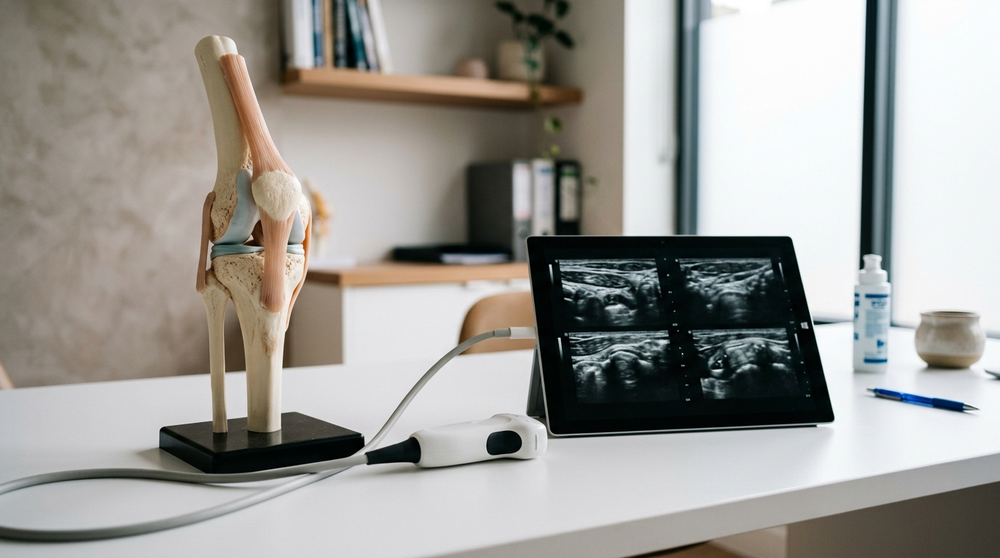
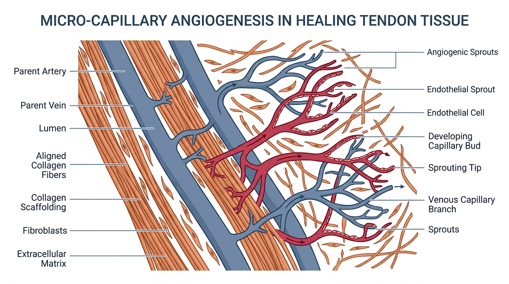

For 22 years, Dr. Elena Torres (a Doctor of Physical Therapy and clinic director in Tampa, Florida) had helped thousands of patients recover from joint replacements, sports injuries, and chronic pain syndromes.
She knew human biomechanics inside and out.
Yet at age 53, Elena found herself completely trapped by her own failing physiology:
- A chronic Achilles tendinopathy in her left ankle made every step agonizing.
- Mild-to-moderate osteoarthritis in her right hip flared up after 15 minutes of standing.
- Years of taking NSAIDs (ibuprofen) to manage her pain had severely damaged her gastrointestinal lining, causing chronic bloating, food sensitivities, and systemic inflammation.
"I followed every protocol in the orthopedic playbook," Dr. Torres states. "Dry needling, therapeutic ultrasound, PRP injections, anti-inflammatory diets, and customized rehab exercises. The PRP gave me mild, temporary relief for a month, but my Achilles tendon remained thickened, hypoechoic, and degenerated."
Her orthopedic colleague recommended surgical debridement of the tendon and eventual hip resurfacing. Knowing the risks and long recovery times of surgery, Elena began investigating regenerative peptide pharmacology.
The Biological Reality: The Avascular Healing Trap
In clinical physical therapy, the hardest tissues to rehabilitate are tendons, ligaments, and fibrocartilage. The reason is simple and unforgiving: They are largely avascular.
While skeletal muscle is richly supplied with blood vessels, tendons and joint capsules receive less than 1/10th the blood flow of muscle tissue.

Dr. Torres' 28-Day Clinical Recovery
| CLINICAL PARAMETER | DAY 1 (BASELINE) | DAY 28 (POST-KLOW) |
|---|---|---|
| Achilles Pain on Walking (0-10) | 8.0 / 10 (Severe Limp) | 0.0 / 10 (Zero Pain) |
| Ultrasound Tendon Width | 9.8 mm (Thickened/Frayed) | 5.4 mm (Healthy & Aligned) |
| Daily NSAID / Advil Usage | 800 mg / day | 0 mg / day (Discontinued) |
| Daily Stand/Walk Tolerance | 30 Minutes (Max) | 8+ Hours (Full Workday) |
| Gastrointestinal Symptoms | Severe Bloating & Leaky Gut | 100% Normalized |
Frequently Asked Questions
Q: How does KLOW help with both joint injuries and gut health?
A: The gut lining and connective tissues share identical epithelial and endothelial healing pathways. BPC-157 and KPV are powerful mucosal healers, repairing the gut barrier while simultaneously accelerating tendon and joint recovery.
Q: How long does a standard protocol last?
A: A typical regenerative cycle is 4 to 8 weeks, depending on the severity of the tissue damage. Once the micro-capillary network and collagen matrix are rebuilt, the structural repair is permanent.
60-Day Orthopedic Recovery Clinical Guarantee
If you qualify and adhere to the physician-guided KLOW protocol for 60 days and do not experience dramatic relief in joint mobility, tendon strength, and overall tissue recovery, receive a full 100% refund.
Eliminate Chronic Pain & Reclaim Your Mobility
Take the 2-minute orthopedic self-assessment below to check your qualification for the physician-guided KLOW Peptide Protocol.